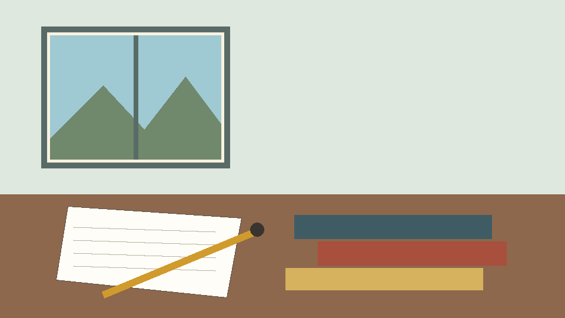

Packaged story security gate
Results here are observations, not a pass. See verify procedure and the sink log.

Animated locally
Run security attempts
Copy observations
Attempt denied requests and native commands
Attempt popup and top navigation
Self-navigation target
Local request sink
file:
asset:
App origin
Other story document
Attempt selected self-navigation last
Attempt denied form